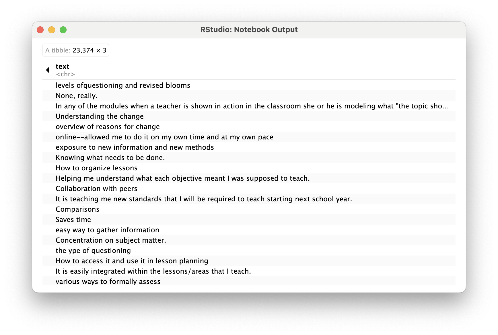
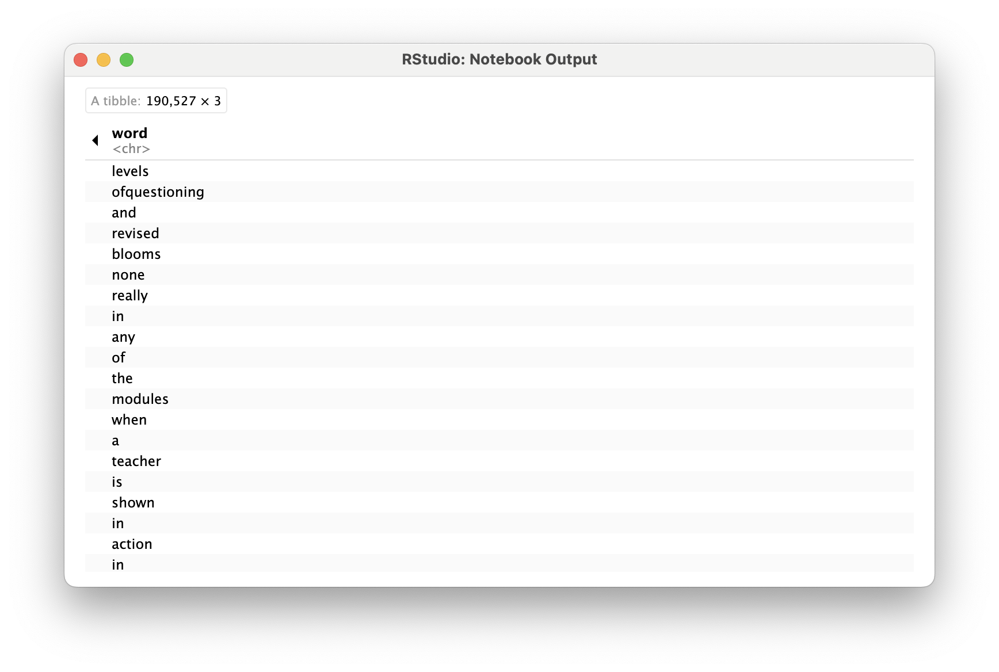
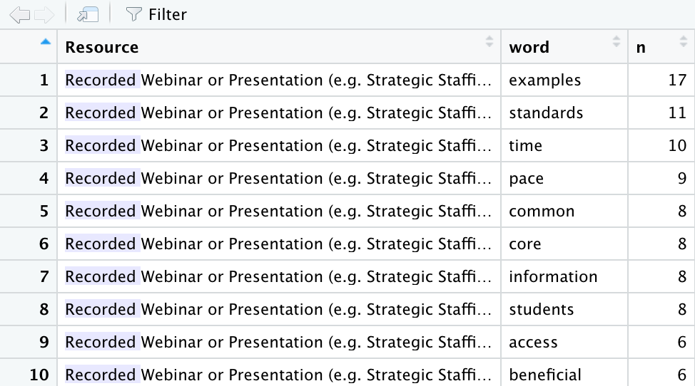
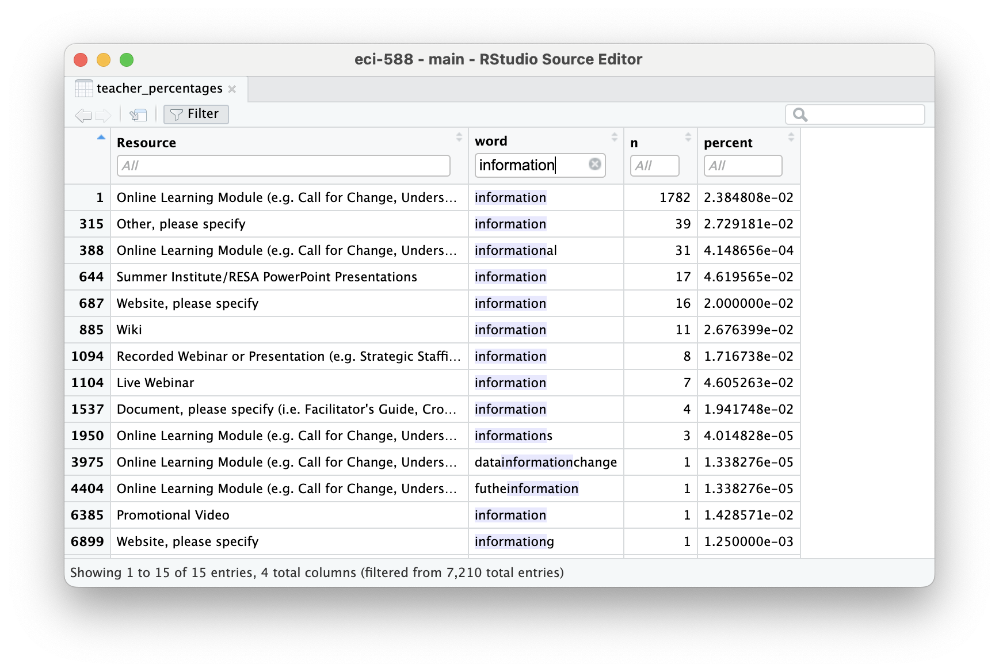
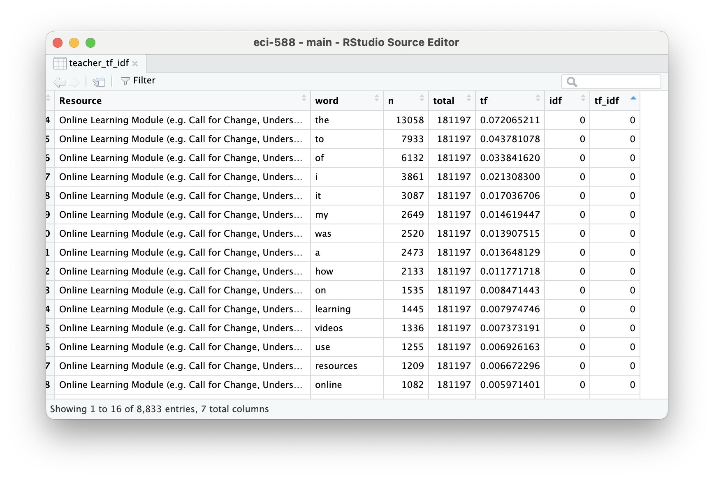
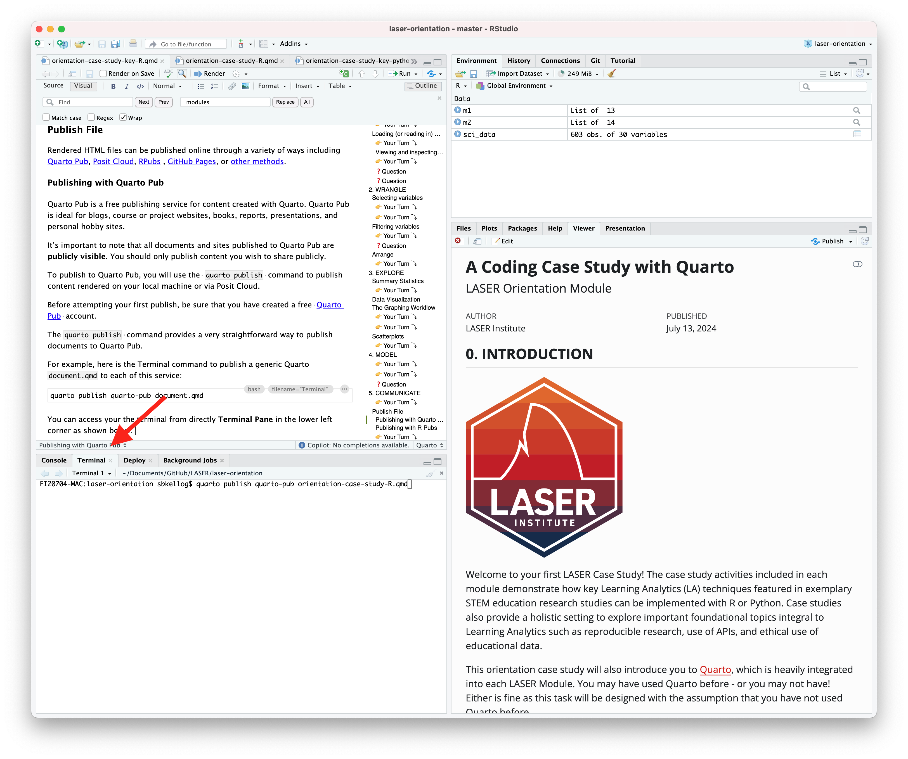

library(tidyverse)Tidy Text, Tokenization & Term Frequency
TM Module 1: Case Study Key
0. INTRODUCTION
For each Text Mining module, we’ll conduct a basic learning analytics workflow modeled after the Data-Intensive Research Workflow from Learning Analytics Goes to School (Krumm, Means, and Bienkowski 2018).

Each case study will focus on a basic analysis using progressively advanced text mining techniques that you’ll be expected to reproduce and eventually apply to a dataset and analysis of your own choosing.
This week, we will focus on analysis of open-ended survey items from an evaluation of the North Carolina Department of Public Instruction (NCDPI) online professional development offered as part of the state’s Race to the Top efforts. For more information about the Race to the Top evaluation work, visit https://fi.ncsu.edu/projects/evaluation-of-race-to-the-top/.
Case Study Focus
For Module 1, our focus will be on getting our text “tidy” so we can perform some basic word counts, look at words that occur at a higher rate in a group of documents, and examine words that are unique to those document groups. Specifically, the Module 1 Case Study will cover the following workflow topics:
- Prepare: Prior to analysis, it’s critical to understand the context and data sources you’re working with so you can formulate useful and answerable questions.
- Wrangle: Wrangling data entails the work of manipulating, cleaning, transforming, and merging data. In section 2 we focus on reading, reducing, and tidying our data.
- Explore: In section 3, we use simple summary statistics, more sophisticated approaches like term frequency-inverse document frequency (tf-idf), and basic data visualization to explore our data and see what insight it provides in response to our question.
While we won’t investigate approaches to Model our data until Module 3 when we learn about topic models, we will be developing “data products” next week to Communicate key findings and insights.
1. PREPARE
Prior to analysis, it’s critical to understand the research context and data sources available so you can formulate useful questions that can be feasibly addressed by your data. For this section, we’ll focus on the following topics:
- Context. We learn a little bit about the North Carolina Race to the Top grant and the evaluation of the online professional development work, including questions and findings from the 2012 report.
- Questions. What aspects of online professional development offerings do teachers find most valuable?
- Libraries. We revisit the [tidyverse] package and are introduced to the [tidytext] companion packages for text processing the “tidy” way.
1a. Some Context
RTTT Online Professional Development Evaluation
North Carolina was one of 12 recipients of the 2010 federal Race to the Top (RttT) grants, bringing nearly $400 million to the state’s public school system. Over the course of four years, NC’s RttT coordinated a set of activities and policy reforms designed to collectively improve the performances of students, teachers, leaders, and schools.
The North Carolina Race to the Top (RttT) proposal (North Carolina Office of the Governor, 2010) specifies that the state’s Professional Development Initiative will focus on the “use of e- learning tools to meet the professional development needs of teachers, schools, and districts” (p. 191). It points to research demonstrating that “well-designed and well-implemented online professional development programs are not only valued by teachers but also positively impact classroom practices and student learning.”
Data Source & Analysis
The evaluation used a wide range of data sources including interviews, document review, site analytics, and surveys, which we’ll focus on for this case study. Survey protocols were designed in cooperation with NCDPI to systematically collect information about local professional development, state-level supports, use of available RttT professional development resources, and organizational and classroom practices in the schools, which will serve as a baseline to assess changes over the period of the North Carolina RttT initiatives.
Quantitative analyses focused primarily on descriptive analysis of item-level responses. In addition, quantitative data from these surveys were analyzed to examine patterns in responses by participants’ role, event type (e.g., module, webinar, resource), and region. Responses to open-ended survey items of the Online Resources Survey were manually coded by their relation to each Learning Forward professional development standard.
Note
The dataset we’ll be using for analysis in this case study is exported as is from Qualtrics with personal identifiers, select demographics, metadata, and closed-ended responses removed.
Summary of Findings
Approximately half of the state’s educators completed at least one online module by the end of the 2011-12 school year. Overall, most participants agreed that the webinars and modules were relevant to their professional development needs, though some content was redundant with prior PD activities and not always content- or grade-specific, and some modules did not fully address national standards for professional development. Moervoer, most online modules were completed independently and not in Professional Learning Community groups.
A common theme from focus groups and open-ended survey responses was the convenience of online professional development. One teacher in a focus group stated, “I liked the format. And the way that it was given, it was at your own pace, which works well for our schedules…” Educators also frequently cited that the information and resources provided through the modules improved their understanding of the new standards and the teacher evaluation process. Webinar participants appreciated the useful, updated information presented through a combination of PowerPoint slides and video clips.
While the majority of educators have indicated their satisfaction with these resources, the findings suggest that the use of these resources at both the state and local level was not wholly consistent with national standards for online professional development. Many LEAs likely needed additional guidance, training, support, technology tools, and/or content resources to ensure that local efforts contribute to the quality of the experiences for educators and that the vision for online professional development outlined in the state’s RttT proposal is realized and can be sustained beyond RttT.
1b. Guiding Questions
The State’s progress on designing and implementing online professional development was originally guided by the following (very) general evaluation questions:
- State Strategies: To what extent did the state implement and support proposed RttT professional development efforts?
- Short-Term Outcomes: What were direct outcomes of state-level RttT professional development efforts?
For this case study, we’ll use basic text analysis techniques to complement prior qualitative analyses conducted as part of the RttT Evaluation by examining responses to open-ended questions on the RttT Online PD Survey administered to over 15,000 NC educators.
Our (very) specific questions of interest for this case study are:
- What aspects of online professional development offerings do teachers find most valuable?
- How might resources differ in the value they afford teachers?
Finally, one overarching question we’ll explore throughout this course, and that Silge and Robinson (2018) identify as a central question to text mining and natural language processing, is:
How do we quantify what a document or collection of documents is about?
1c. Load Libraries
tidyverse 📦

Recall from earlier tutorials that the {tidyverse} package is actually a collection of R packages designed for reading, wrangling, and exploring data and which all share an underlying design philosophy, grammar, and data structures. These shared features are sometimes “tidy data principles.”
Click the green arrow in the right corner of the “code chunk” that follows to load the {tidyverse} library introduced in our Getting Started case study.
Don’t worry if you saw a number of messages: those probably mean that the tidyverse loaded just fine. Any conflicts you may have seen mean that functions in these packages you loaded have the same name as functions in other packages and R will default to function from the last loaded package unless you specify otherwise.
tidytext 📦

As we’ll learn first hand in this module, using tidy data principles can also make many text mining tasks easier, more effective, and consistent with tools already in wide use. The {tidytext} package helps to convert text into data frames with each rows containing an individual word or sequence of words, making it easy to to manipulate, summarize, and visualize text using using familiar functions form the {tidyverse} collection of packages.
👉 Your Turn ⤵
Now it it’s your turn! In the code chunk below, use the library() function to load the {tidytext} package:
#TYPE YOUR CODE BELOW, CLICK GREEN ARROW TO RUNFor a more comprehensive introduction to the tidytext package, I cannot recommend enough the free and excellent online book, Text Mining with R: A Tidy Approach (Silge and Robinson 2017). If you’re interested in pursuing text analysis using R after this course, this will be a very handy reference.
2. WRANGLE
In general, data wrangling involves some combination of cleaning, reshaping, transforming, and merging data (Wickham, Çetinkaya-Rundel, and Grolemund 2023). The importance of data wrangling is difficult to overstate, as it involves the initial steps of going from raw data to a dataset that can be explored and modeled (Krumm, Means, and Bienkowski 2018).
- Reading Data. Before working with data, we need to “read” it into R. It also helps to inspect your data and we’ll review different functions for doing so.
- Data Reduction. We focus on tools from the
dplyrpackage toview,rename,select,slice, andfilterour data in preparation for analysis. - Tidy Text. We’ll learn how to use the
tidytextpackage to both “tidy” and tokenize our text in order to create a data frame to use for analysis.
2a. Read, View, Write Data
This section introduces the following functions for reading data into R and inspecting the contents of a data frame:
dplyr::read_csv()Reading .csv files into R.base::print()View your data frame in the Console Paneutils::view()View your data frame in the Source Panetibble::glimpse()Like print, but transposed so you can see all columnsutils::head()View the first 6 rows of your data.utils::tail()View last 6 rows of your data.dplyr::write_csv()writing .csv files to directory.
Tip
The name before the double colon indicates the package the function comes from. For example, read_csv comes from the readr package. In practice, we do not typically need to name the package when we call a function. If there are packages that use a function with the same name, it will default to the package that last loaded.
Reading Data into R
To get started, we need to import, or “read”, our data into R. The function used to import your data will depend on the file format of the data you are trying to import. The RttT Online PD survey data is stored in a CSV file named opd_survey.csv which is located in the data folder of this project.
👉 Your Turn ⤵
Before loading our data, locate survey data file under the Files tab in the bottom right pane of RStudio by clicking on the data folder. Now click on the name of the file, click “Import Dataset,” and write a few observations of what you see in the space below:
YOUR RESPONSE HERE
YOUR RESPONSE HERE
YOUR RESPONSE HERE
Tip
Using the Import Dataset feature is just one of several ways to import data into R. There is also an Import Dataset feature under the Environment tab in the upper right pane of RStudio. Depending on the packages you have install, it will provide you with options for importing Excel, Stata, SAS, SPSS files and more. If you happen to run into issues with data import, the Import Dataset feature provides a point and click approach to adding data to your environment.

Now let’s read our data into our Environment and assign it to a variable name so we can work with it like any other object in R.
opd_survey <- read_csv("data/opd_survey.csv")Well done! The message not only communcates the number of rows and columns, but also indicates that the read_csv() dealt with an issue of duplicate column names for us!!
👉 Your Turn ⤵
Before moving on, you may have noticed that after runing the code to read in our data, an opd_survey object appeared in the Environment tab in the upper right pane of RStudio. Click on the name of the data object to view the imported data and write a few observations about what you see:
YOUR RESPONSE HERE
YOUR RESPONSE HERE
YOUR RESPONSE HERE
Viewing Data in RStudio
Once your data is in R, there are many different ways you can view it as shown by the code below:
# enter the name of your data frame and view directly in console
opd_survey
# view your data frame transposed so your can see every column and the first few entries
glimpse(opd_survey)
# look at just the first six entries
head(opd_survey)
# or the last six entries
tail(opd_survey)
# view the names of your variables or columns
names(opd_survey)
# or view in source pane
view(opd_survey) 👉 Your Turn ⤵
Use the code chunk below to give each method a try:
# YOUR CODE HERE
Warning
The view() function is a very useful function for displaying a data frame in an interactive spreadsheet-like interface within RStudio. However, it causes issues when rendering Quarto or knitting R Markdown documents because it does not produce an output or modify the environment as expected when rendering documents.
Notice that in the code chunk above that the eval=FALSE option as been included in the header. This will prevent Quarto from evaluating this code chunk and including it in the rendered HTML file. If you use the view() function in later code chunks, be sure to include this option. Alternatively, you can use the view function directly in the console.
Writing Data to your Project Folder
In addition to reading data from your project folder, you can also write data back to a folder. The readr package has an intuitively named write_csv() function for doing just that.
Using the following code to create a copy of the opd_survey.csv file in your data folder from the opd_survey data frame you created:
write_csv(opd_survey, "data/opd_survey_copy.csv")Note that the first argument is the data frame you created earlier and the second argument is the file name you plan to give it, including (if necessary) the file path for where it should go.
❓Question
The read_csv and write_csv functions from the [readr] package are a powerful combination of tidyverse functions. In the pane below, type ?read_csv into the Console and click Enter or Return to get more information on this function and then respond to following questions:
What argument would you add to
read_csv()if my file did not not have column names or headers?- YOUR RESPONSE HERE
What is the first argument that
read_csv()always expects and what happens if you don’t include in quotes?- YOUR RESPONSE HERE
What package would I need if I wanted to read a Microsoft Excel file into R? Hint: Check the cheatsheet below.
- YOUR RESPONSE HERE
What happens if you use
write_csv(opd_survey, "opd_survey_copy.csv")and just specify the file name instead including the folder? Try it out in the Console below.- YOUR RESPONSE HERE
What immediate data wrangling issues do you anticipate we’ll have to deal with now that you’ve looked at our data?
- YOUR RESPONSE HERE
For more information about check this handy cheatsheet for the readr package from the readr website at https://readr.tidyverse.org/index.html
2b. Reduce Data
As you’ve probably already noticed from viewing our dataset, we clearly have more data than we need to answer our rather basic research question. For this part of our workflow we focus on the following functions from the tidyverse dplyr and tidyr packages for wrangling our data:
dplyr functions
select()picks variables based on their names.slice()lets you select, remove, and duplicate rows.rename()changes the names of individual variables using new_name = old_name syntaxfilter()picks cases, or rows, based on their values in a specified column.
tidyr functions
drop_na()removes rows with missing values, i.e. NA
Subset Columns
Recall that our research questions are focused on understanding aspects of online professional development offerings that teachers find most valuable and how these resources may differ in the value they offer teachers. To help address our research question, let’s first reduce our dataset to only the columns needed.
To begin, we’ll select() the columns Role, Resource, and Q21 since those respectively pertain to educator role, OPD resource they are evaluating, and, as illustrated by the second row of column Q21, their response to the survey question, “What was the most beneficial/ aspect of the professional development resource?”
We’ll also assign these selected columns to a new data frame named opd_selected by using the <- assignment operator.
Run the following code:
opd_selected <- select(opd_survey, Role, Resource, Q21)👉 Your Turn ⤵
Suppose we were interested instead in analyzing how educators are are using the online resources instead of the most beneficial aspects.
Change the code below to select the correct columns and then run the code:
opd_use <- select(opd_survey, Role, Resource, Q21)Notice that, like the bulk of tidyverse functions we’ll be using throughout our case studies, the first argument that the select() function expects is a data frame, which in our case is opd_survey. The select() function the expects the specific columns you’d like to select.
Another common approach to providing tidyverse functions a data frame is to use the |> pipe operator from the {maggitr] package, which is used to “pipe” inputs and outputs from one function to another. This operator is used so frequently in R, that it has now built into R with the new |> pipe operator.
Run the following code to select the columns Role, Resource, and Q21 columns and assign these columns to a new data frame named opd_selected:
opd_selected <- opd_survey |>
select(Role, Resource, Q21)This code produces the same result as the previous code, but is a common way in R of providing data to a function.
👉 Your Turn ⤵
Use one of the data viewing functions that we introduced above to take a look at our newly created data frame:
head(opd_selected)Great job! You probably notice that the data frame now has dramatically fewer variables.
Rename Columns
Notice that Q21 is not a terribly informative variable name. Let’s now take our opd_selected data frame and use the rename() function along with the = assignment operator introduced last week to change the name from Q21 to text and save it as opd_renamed.
This naming is somewhat intentional because not only is it the text we are interested in analyzing, but also mirrors the naming conventions in our Text Mining with R (Silge and Robinson 2017) course book and will make it easier to follow the examples there.
Run the following code to rename the column and print the updated data frame:
opd_renamed <- rename(opd_selected, text = Q21)
opd_renamedSubset Rows
Now let’s deal with the legacy rows that Qualtrics outputs by default, which are effectively 3 sets of headers. We will use the slice() function, which is basically the same as the select() function but for rows instead of columns, to carve out those two rows.
opd_sliced <- slice(opd_renamed, -1, -2) # the - operator tells the slice function to NOT keep rows 1 and 2
opd_slicedNow let’s take our opd_sliced and remove any rows that are missing data, as indicated by an NA, by using the drop_na tidyverse function:
opd_complete <- drop_na(opd_sliced)
opd_completeFinally, since we are only interested in the feedback from teachers, let’s also filter our dataset for only participants who indicated their Role as “Teacher”.
opd_teacher <- filter(opd_complete, Role == "Teacher")
opd_teacher
Note
When we used two == signs to filter for rows when Role is equal to Teacher. This was different than when we used just on = sign to rename our column.
In R, the single = sign is used for creating new variables, object or value, while the double == sign is used to test if two values are equal.
The single = can also be used used for assigning the output of a function to a new objects, like so:
opd_complete = drop_na(opd_sliced)
However, using and == for comparisons and the <- operator for assignment avoids ambiguity and makes the code easier to read and maintain.
👉 Your Turn ⤵
Suppose we were interested instead in analyzing School Executive responses instead of teachers.
Change the code below to filter the correct rows and then run the code:
opd_executive <- filter(opd_complete, Role == "Teacher")
opd_executiveSummary
That was a lot of code we just wrote to end up with opd_teacher. Let’s review:
opd_selected <- select(opd_survey, Role, Resource, Q21)
opd_renamed <- rename(opd_selected, text = Q21)
opd_sliced <- slice(opd_renamed, -1, -2)
opd_complete <- drop_na(opd_sliced)
opd_teacher <- filter(opd_complete, Role == "Teacher")
opd_teacherNote that we could have reused opd_teacher and simply overwritten it each time to prevent creating new objects:
opd_teacher <- select(opd_survey, Role, Resource, Q21)
opd_teacher <- rename(opd_teacher, text = Q21)
opd_teacher <- slice(opd_teacher, -1, -2)
opd_teacher <- drop_na(opd_teacher)
opd_teacher <- filter(opd_teacher, Role == "Teacher")
opd_teacherCode Reduction
Fortunately, we can use the Pipe Operator |> introduced in Chapter 6 of Data Science in Education Using R (DSIEUR) to dramatically simplify these cleaning steps and reduce the amount of code written:
opd_teacher <- opd_survey |>
select(Role, Resource, Q21) |>
rename(text = Q21) |>
slice(-1, -2) |>
drop_na() |>
filter(Role == "Teacher")
opd_teacher👉 Your Turn ⤵
Use the code chunk below to rewrite the piped code above for an additional analysis. The data frame should includes all Roles, not just teachers, but excludes the Resource column. Assign it to opd_benefits using the <- operator for later use.
# YOUR CODE HEREWell done! Our text is now ready to be tidied!!!
2c. Tidy Text
For this part of our workflow we focus on the following functions from the tidytext and dplyr packages respectively:
unnest_tokens()splits a column into tokensanti_join()returns all rows from x without a match in y.
Tidy Data Principles
Not surprisingly, the Tidyverse set of packages including packages like dplyr adhere “tidy” data principles (Wickham, Çetinkaya-Rundel, and Grolemund 2023). Tidy data has a specific structure:
- Each variable is a column
- Each observation is a row
- Each type of observational unit is a table
❓Question
According to tidy data principles, why do you think the data frame below would be considered “untidy”?
- YOUR RESPONSE HERE

Text data, by it’s very nature is ESPECIALLY untidy. In Chapter 1 of Text Mining with R, Silge and Robinson define the tidy text format as:
a table with one-token-per-row. A token is a meaningful unit of text, such as a word, that we are interested in using for analysis, and tokenization is the process of splitting text into tokens.
In this section, our goal is to transform our opd_teacher text data from this:

to this:

This one-token-per-row structure differs from how text is often stored, perhaps as strings or in a document-term matrix. The token that is stored in each row is most often a single word, but can also be an n-gram (e.g., a sequence of 2 or 3 words), a sentence, or even a whole paragraph. Conveniently, the tidytext package, provides functionality for tokenizing text by common units like these into a one-term-per-row format.
Tokenize Text
In order to tidy our text, we need to break the text into individual tokens (a process called tokenization) and transform it to a tidy data structure. To do this, we use tidytext’s incredibly powerful unnest_tokens() function.
After all the work we did prepping our data, this is going to feel a little anticlimactic.
Run the following code to tidy our text and save it as a new data frame named opd_tidy:
opd_tidy <- unnest_tokens(opd_teacher, word, text)
opd_tidyNote that we also could have just added unnest_tokens(word, text) to our previous piped chain of functions like so:
opd_tidy <- opd_survey |>
select(Role, Resource, Q21) |>
rename(text = Q21) |>
slice(-1, -2) |>
drop_na() |>
filter(Role == "Teacher") |>
unnest_tokens(word, text)
opd_tidyThere is A LOT to unpack with this function. First notice that unnest_tokens expects a data frame as the first argument, followed by two column names. The first is an output column name that doesn’t currently exist (word, in this case) but will be created as the text is unnested into the new column. This if followed by the input column that the text comes from which we uncreatively named text. Also notice:
- Other columns, such as
RoleandResource, are retained. - All punctuation has been removed.
- Tokens have been changed to lowercase, which makes them easier to compare or combine with other datasets. However, we can use the
to_lower = FALSEargument to turn off this behavior if desired.
Remove Stop Words
One final step in tidying our text is to remove words that don’t add much value to our analysis (at least when using this approach) such as “and”, “the”, “of”, “to” etc. The tidytext package contains a stop_words dataset derived from three different lexicons that we’ll use to remove rows that match words in this dataset.
Let’s take a look at the first 20 stop words so we know what we’re getting rid of from our opd_tidy dataset.
head(stop_words, 20)Now run the following code to view all stop words in each lexicon:
view(stop_words)In order to remove these stop words, we will use function called anti_join() that looks for matching values in a specific column from two datasets and returns rows from the original dataset that have no matches. For a good overview of the different dplyr joins see here: https://medium.com/the-codehub/beginners-guide-to-using-joins-in-r-682fc9b1f119

Let’s remove rows from our opd_tidy data frame that contain matches in the word column with those in the stop_words dataset and save it as opd_clean since we were done cleaning our data at this point.
opd_clean <- anti_join(opd_tidy, stop_words)
opd_clean👉 Your Turn ⤵
In the code chunk below, add the anti_join() function to our chain of data wrangling functions as our final text preprocessing step. Don’t forget to include in the function the stop words you are trying to remove.
Also, add a short comment to each line of code explaining each data wrangling step. The first had been done for you.
wrangled_teacher <- opd_survey |>
select(Role, Resource, Q21) |> # Select only columns Role, Resource, and Q21
rename(text = Q21) |>
slice(-1, -2) |>
drop_na() |>
filter(Role == "Teacher") |>
unnest_tokens(word, text) |>
wrangled_teacherIf you did this correctly, you should now see a wrangled_teacher data frame in the Environment pane that has 78,675 observations and 3 variables.
👉 Your Turn ⤵
Finally, let’s wrangle a data set that includes tokens not just for teachers, but for all educators who particiated in the online professional development offerings.
Complete and run the following code to wrangle and tidy your opd_survey data for all survey respondents.
wrangled_all <- opd_survey |>
wrangled_all❓Questions
- How many observations are in the data frame with all educators?
- YOUR RESPONSE HERE
- Why do you think the console provided the message “Joining, by = ‘word’”?
- YOUR RESPONSE HERE
Congratulations, we’re now ready to begin exploring our wrangled data!
3. EXPLORE
As highlighted in both DSEIUR and Learning Analytics Goes to School, calculating summary statistics, data visualization, and feature engineering (the process of creating new variables from a dataset) are a key part of exploratory data analysis (Estrellado et al. 2020; Krumm, Means, and Bienkowski 2018). One goal in this phase is to explore questions that drove the original analysis and develop new questions and hypotheses to test in later stages. In Section 3, we will calculate some very basic summary statistics from our tidied text, explore key words of interest to gather additional context, and use data visualization to identify patterns and trends that may not be obvious from our tables and numerical summaries.
Topics addressed in Section 3 include:
- Summary Stats. We focus primarily on the use of word counts and calculating proportions to to help us identify common words used to describe the most valuable aspects of online professional development offerings.
- Word Search. We learn about the global regular expression parser, or
greppackage in R, to search for key words among our data set. - Data Visualization. Finally, we wrap up this case study and by creating wordclouds, bar plots, and small multiple charts to explore patterns and trends that would be difficult to distinguish otherwise.
3a. Summary Stats
Prior to making any data visualization, we revisit the overarching question guiding most of our efforts in the text mining modules, “How do we quantify what a text is about?”
In this section, we introduce the following functions:
dplyr functions
count()lets you quickly count the unique values of one or more variablesgroup_by()takes a data frame and one or more variables to group bymutate()adds new variables and preserves existing onesleft_join()add columns from one dataset to another
tidytext functions
- bind_tf_idf() binds the term frequency and inverse document frequency of a tidy text dataset to the dataset
Term Frequency
As highlighted in Word Counts are Amazing, one simple but powerful approach to text analysis is counting the frequency in which words, or terms, occur in a given collection of documents, or corpus.
Now that we have our original survey data in a tidy text format, we can use the count() function from the dplyr package to find the words used most frequently by teachers when asked, “What was the most beneficial/valuable aspect of this online resource?”
teacher_counts <- count(wrangled_teacher, word, sort = TRUE)
# alternatively, we could have use the |> operator to yield the same result.
teacher_counts <- wrangled_teacher |>
count(word, sort = TRUE)
teacher_countsGoing back to findings from the original report, a strategy as simple basic word counts resulted in key words consistent with findings from the qualitative analysis of focus-group transcripts and open-ended survey responses.
For example:
Educators frequently cited that the information and resources provided through the modules improved their understanding of the new standards and the teacher evaluation process.
See also this finding around video clips:
Webinar participants appreciated the useful, updated information presented through a combination of PowerPoint slides and video clips.
One notable distinction between word counts and traditional qualitative analysis is that broader themes like “convenience” often are not immediately apparent in words counts, but rather emerges from responses containing words like “pace”, “format”, “online”, “ease”, and “access”.
A common theme from focus groups and open-ended survey responses was the convenience of online professional development. One teacher in a focus group stated, “I liked the format. And the way that it was given, it was at your own pace, which works well for our schedules…”
The count() function can also be used with more than one column to count the frequency a word occurs for a select Resource in our dataset.
teacher_resource_counts <- wrangled_teacher |>
count(Resource, word, sort = TRUE)
teacher_resource_countsIn this case, we see that “information” was the most common word for Online Learning Modules but did not even make the top 5 for Recorded Webinar:

👉 Your Turn ⤵
Complete the following code to obtain word counts across all OPD resources and within resources for all educators using the wrangled_all data frame you created earlier:
all_counts <-
all_counts
all_resource_counts <-
all_resource_counts❓Question
- What differences in word counts do you notice when we include all educators? Share at least two observations.
- YOUR RESPONSE HERE
- YOUR RESPONSE HERE
Relative Frequency
One common approach to facilitate comparison of responses across Online Resource type is by looking at the relative frequency (percent) that each word, or term, occurs among all words for that document group. This also helps to better gauge how prominent the same word is across different groups.
For example, let’s create counts for each Resource and word paring, and then create a new column using the mutate() function that calculates the proportion that word makes up among all words.
To do this a little more efficiently, let’s use the |> operator again:
teacher_percentages <- wrangled_teacher |>
count(Resource, word, sort = TRUE) |>
group_by(Resource) |>
mutate(percent = n / sum(n))
teacher_percentagesWe can quicly see that “information” makes up about 2.3% of words in responses about the Online Modules and is the most frequently used word, but what about the other online resources?
👉 Your Turn ⤵
One way to quickly take a look at the relative frequency of “information” across all resources is to use the handy filter() function like we did when we previsouly filtered our data set for only Roles with the value of teacher.
Complete and run the following code chunk to filter the word column for only rows rows that contain the word “information”.
teacher_percentages |>
filter(word == "information")
Tip
By using the view() function or clicking on the data frame in your Environment pane to view the data, you can also manually apply filters to your data like so:

Before moving on, let’s take a look at the top 5 words for each resource:
teacher_percentages |>
group_by(Resource) |>
arrange(Resource, desc(percent)) |>
slice_head(n = 5) |>
ungroup() ❓Questions
- What similarities and/or differences in most frequently occurring words do you notice across resources? Share at least two observations.
- YOUR RESPONSE HERE
- YOUR RESPONSE HERE
Term Frequency-Inverse Document Frequency
Term frequency-inverse document frequency (tf-idf) is an approach that takes this one step further.
As noted in Tidy Text Mining with R:
The statistic tf-idf is intended to measure how important a word is to a document in a collection (or corpus) of documents, for example, to one novel in a collection of novels or to one website in a collection of websites.
Silge and Robinson note that tf-idf aims to identify the most significant words in a document by reducing the emphasis on frequently used words and amplifying the importance of words that are relatively rare across a collection or corpus. In other words, tf-idf highlights terms that are important within a group but not overly common across groups.
The tidytext package has a function called bind_tf_idf() that takes a tidy text dataset as input with one row per token (term), per document. One column (word here) contains the terms/tokens, one column contains the documents (book in this case), and the last necessary column contains the counts, how many times each document contains each term (n in this example).
Because tf-idf can account for “too common” words like “and” or “but” through weighting, when calculating tf-idf it is not necessary to remove stop words. However, we will need add a column for total words for each Resource type, which can be accomplished in a couple of steps.
First, let’s recycle our opd_teacher data frame from above, tokenize teacher responses while retaining stop words, and calculate counts for each word again. However, this time instead of word counts for the total data set, we’ll calculate word counts by Resource.
teacher_words <- opd_teacher |>
unnest_tokens(word, text) |>
count(Resource, word, sort = TRUE)
teacher_wordsNext, let’s calculate the total words per Resource type:
teacher_sum <- teacher_words |>
group_by(Resource) |>
summarise(total = sum(n))
teacher_sumNow let’s join the total column from teacher_sum to our teacher_words data frame:
teacher_totals <- left_join(teacher_words, teacher_sum)
teacher_totalsNow that we have both the frequency and the total words for each resource, we’re ready to use the bind_tf_idf() function to calculate a tf-idf statistic for each word and assess it’s relative importance to a given online resource type:
teacher_tf_idf <- teacher_totals |>
bind_tf_idf(word, Resource, n) |>
arrange(desc(idf))
teacher_tf_idfNotice that idf and thus tf-idf are zero for extremely common words (typically stop words). These are all words that appear in teacher responses across many or even all online resource types.

The inverse document frequency (and thus tf-idf) is very low (near zero) for words that occur in many of the documents in a collection; this is how this approach decreases the weight for common words.
For words that occur in fewer of the documents in the collection, or in our case survey responses by resource type, the inverse document frequency will be a higher number.
Let’s take a look at the top five most unique words for each resource type:
teacher_tf_idf |>
group_by(Resource) |>
arrange(Resource, desc(idf)) |>
slice_head(n = 5) |>
ungroup() While some of these words make sense and are useful for for distinguishing the unique value of a resource, like “reflection” for Online Learning Modules or “interface” for Calendar, it’s obvious many of these words were only identified as unique simply because they were misspelled words. Clearly something we would attend to for a more rigorous analysis.
Caution
While tf-idf has proved useful in text mining, search engines, etc., its theoretical foundations are considered less than firm by information theory experts.
In the next section, we’ll use some data visualization strategies to help us interpret and find patterns in these rather dense output tables.
👉 Your Turn ⤵
Before moving on, let’s return to the previous dataset you wrangled for all educators responses and take a look at the most common words across all educators.
Use the code chunk below to calculate word counts and relative frequencies for your wrangled_all data frame.
# YOUR CODE HERE❓Questions
- What similarities and/or differences in most frequently occurring words do you notice across all educators? Share at least two observations.
- YOUR RESPONSE HERE
- YOUR RESPONSE HERE
3b. Word Search
This section is a really quick aside and primarily meant to introduce the grep package that we’ll be using in future modules.
A quick word count actually resulted in findings fairly consistent with some of the qualitative findings reported, but also lacked some nuance, unsurprisingly, and left some questions about what some of the more frequent words were in reference to.
Let’s again use our opd_teacher survey data frame that contains the complete teacher responses and apply the handy filter(), select() and grepl() function to select just our text column and filter out responses that contain key words of interest. For example, what aspects of “online” made it beneficial.
We can view all quotes in the source pane, or use the sample_n(), yes from the dplyr package, to select any number of random quotes. In this case 20:
opd_quotes <- opd_teacher |>
select(text) |>
filter(grepl('online', text))
sample_n(opd_quotes, 20)In some cases, we can see that the use of the word “online” was simply repetition of the question prompt, but in other cases we can see that it’s associated with the broader theme of “convenience” as with the quote, “This online resources gave me the opportunity to study on my own time.”
Note that you can also use regular express operators with grep like the * operator to search for word stems. For example using inform* in our search will return quotes with “inform”, “informative”, “information”, etc.
opd_quotes <- opd_teacher |>
select(text) |>
filter(grepl('inform*', text))
sample_n(opd_quotes, 20)👉 Your Turn ⤵
Repurpose the code from above to examine responses for another word or word stem of interest:
# YOUR CODE HERE❓Questions
- What do you notice? Share at least two observations.
- YOUR RESPONSE HERE
- YOUR RESPONSE HERE
3c. Data Visualization
We covered data visualization pretty extensively in ECI 586: Introduction to Learning Analytics, but for those new to data visualization in R, the go to package for standard charts and graphs is ggplot2. Hadley Wickham’s R for Data Science and [ggplot2: Elegant Graphics for Data] are also great introductions to data visualization in R with ggplot2.
Word Clouds
The wordcloud2 package is pretty dead simple for generating HTML based word clouds.
For example, let’s load our installed wordclouds2 library, and run the wordcloud2() function on our teacher_counts data frame:
library(wordcloud2)
wordcloud2(teacher_counts)I use wordclouds pretty sparingly in articles or reports, but typically include them for open ended items in online survey reports to provide education partners a quick snapshot of item responses.
Once installed, I recommend using ?wordcloud2 to view the various arguments for cleaning up the default view. For example:
wordcloud2(teacher_counts, color = "random-light", backgroundColor = "black")👉 Your Turn ⤵
Create a word cloud for all survey responses using the all_counts data frame you created previously:
# YOUR CODE HEREBasic Bar Chart
The bar chart is the workhorse for data viz and is pretty effective for comparing two or more values. Given the unique aspect of our tidy text data frame, however, we are looking at upwards of over 5,000 values (i.e. words and their counts) to compare.
So let’s first limit our data set to only words with over 500 or more occurrence using the hand filter() function and the greater than or equal to >= operator:
teacher_chart <- teacher_counts |>
filter(n >= 500)
teacher_chartIn our teacher data frame, it looks like we have 23 words that occur 500 or more times.
For most standard data visualizations, we’ll use the {ggplot2} package which is part of the tidyverse suite of packages. All charts in {ggplot2} use the following basic code template:
ggplot(data) + # ggplot sets up a plot and specifies data used for chart
geom_<type>(aes(x, y)) # geom_<type> specifies the plot type and aes() specifies data for each axis Let’s use the minimal ggplot code template to make a very basic bar chart:
ggplot(teacher_chart) +
geom_col(aes(x = n, y = word))Excellent. However it would be much easier to read and interpret if our bars were ordered by count. Let’s fix that by using the reorder() function to reorder words by their n count:
ggplot(teacher_chart) +
geom_col(aes(x = n, y = reorder(word, n)))Similar to how we chained functions together by using the |> operator earlier, ggplot() can be customized by “adding” functions, or layers, using the + operator.
Let’s give that a try by adding a new layer for changing our axis labels into something more meaningful and adding a title:
ggplot(teacher_chart) +
geom_col(aes(x = n, y = reorder(word, n))) +
labs(
x = "Frequency",
y = "Words",
title = "Mosts Beneficial Aspects of Online PD"
)Better! The {ggplot2} package has a countless number of elements that can be added for customizing a graph.
One additional advantage of ggplot2 is that it can also be used with pipes, so if we wanted to produce a quick graph with minimal code, we could have written our code like so:
teacher_counts |>
filter(n >= 500) |>
ggplot() +
geom_col(aes(x = n, y = reorder(word, n))) +
labs(
x = "Frequency",
y = "Words",
title = "Mosts Beneficial Aspects of Online PD"
)👉 Your Turn ⤵
Use the code chunk below to create a basic bar chart for all survey responses using the all_counts data frame. Feel free to experiement with different graph elements such as color scales or built-in themes.
# YOUR CODE HEREWell done!!
In the Communicate section, I’ll illustrate one one particularly useful graph element called “facets.”
4. MODEL
As highlighted in Chapter 3 of Data Science in Education Using R, the Model step of the data science process entails “using statistical models, from simple to complex, to understand trends and patterns in the data.” The authors note that while descriptive statistics and data visualization during the Explore step can help us to identify patterns and relationships in our data, statistical models can be used to help us determine if relationships, patterns and trends are actually meaningful.
In Learning Analytics Goes to School, the authors describe modeling as simply developing a mathematical summary of a dataset and note that there are two general types to modeling: unsupervised and supervised learning. Unsupervised learning algorithms are used to explore the structure of a dataset, while supervised models “help to quantify relationships between features and a known outcome.”
We will not explore the use of models for text mining until Module 2, but if you are interested in looking ahead to see how they might be applied to text as data, I recommend taking a look at Chapter 6 Topic Modeling from Text Mining with R: A Tidy Approach. Chris Bail in his Text as Data course also provides a nice introduction to Topic Modeling, including Structural Topic Modeling, which we will explore using the stm package in Module 3. He also has this excellent video on topic modeling.
Finally, if you have not already done so, I recommend taking a look at Chapter 3 of DSIEUR as well as the section on the Data-Intensive Research Workflow from Chapter 2 of Learning Analytics Goes to school.
5. COMMUNICATE
The final(ish) step in our workflow/process is sharing the results of analysis with a wider audience. Krumm et al. (2018) have outline the following 3-step process for communicating with education stakeholders what you have learned through analysis:
- Select. Communicating what one has learned involves selecting among those analyses that are most important and most useful to an intended audience, as well as selecting a form for displaying that information, such as a graph or table in static or interactive form, i.e. a “data product.”
- Polish. After creating initial versions of data products, research teams often spend time refining or polishing them, by adding or editing titles, labels, and notations and by working with colors and shapes to highlight key points.
- Narrate. Writing a narrative to accompany the data products involves, at a minimum, pairing a data product with its related research question, describing how best to interpret the data product, and explaining the ways in which the data product helps answer the research question.
For this particular case study, our target audience is developers of online professional learning opportunities who are looking to receive feedback on what’s working well and potential areas for improvement. This allows us assume a good deal of prior knowledge on their end about the context of the evaluation, a high level of familiarly with the online professional development resources being assessed, and fairly literate at reading and interpreting data and charts. This also allows us simplify our data products and narrative and reduce the level of detail needed to communicate useful information.
For summative evaluation, typically at the end of a school year or grant period when the emphasis is on assessing program outcomes and impact, our audience would extend to those less familiar with the program but with a vested interest in program’s success, such as this report to NC State Board of Education or those directly impacted by the program including NC educators is general. In that case, our data product would need to include much more narrative to provide context and greater detail in charts and graphs in order to help interpret the data presented.
5a. Select
Analyses
For analyses to present, I’m going to focus primarily on:
- Word Counts. One of the first things I’ll share with my audience is my analysis of word counts since these are very easy to interpret will provide online PD developers with some instant insight.
- Word Search. I also think it’s important to include some actual participant responses for select key words in order to provide additional information about how those words are being used on context. I may handpick some select quotes or present a random selection of quotes.
- Relative Frequency. Finally, as a way to potentially help them weed through words unique to specific resources, as well as potentially identify some areas for potential follow-up and to dig deeper, I’ll include words with the highest percentage of occurrence for each resource.
Data Products
In terms of “data products” and form, and because this is a simple demonstration for sharing analyses and our first badging experience, I’ll prepare my data product as a basic slide show that includes the following charts:
- Word Cloud. This is really as much decorative as it is a means to communicate key findings. I’ll probably include this on my title slide as a way to immediately engage my audience and provide a preview of findings I’ll share. It’s also a way to include common words that may not make the cut in my bar chart.
- Bar Chart. I’ll definitely share with them the bar chart I created earlier as a means to focus on the most common words used by teachers across all resources. Also, this is a little less busy than a word cloud and allows them to quickly see the top words in order.
- Quotes. As noted above, I also feel it’s important to provide some participants responses that help explain how the common words are being used in context.
- Small Multiples. I think the small multiples chart of high-percentage words would help to spark discussion among PD developers about specific aspects of each resource type and what teachers’ found most valuable.
5b. Polish
Word Cloud
To make the word cloud a little less busy and a little more useful, I removed the multitude of colors from the default setting, and using some modified code form the ?wordclouds2 help file. I’ve included an argument in the wordclouds2( ) function to use the red hex color #CC0000 for words that occur more than 1000 times, and gray for the rest.
library(wordcloud2)
wordcloud2(teacher_counts,
color = ifelse(teacher_counts[, 2] > 1000, '#CC0000', 'gray'))Bar Chart
For my bar chart, I did some minor clean up, including editing the x-axis title, removing the redundant y axis by setting it to NULL, and adding a title. I also used the built-in theme_minimal( ) function layer to simplify the look. If this were something for a more formal report, I’d probably finesse it even more, but it gets the point across.
teacher_counts |>
filter(n > 500) |>
mutate(word = reorder(word, n)) |>
ggplot(aes(n, word)) +
geom_col() +
labs(x = "Word Counts", y = NULL, title = "20 Most Frequently Used Words to Describe the Value of Online Resources") +
theme_minimal()Small Multiples
Word clouds and bar charts are pretty effective for highlighting the most common words in an entire corpus, or in our case, all teacher survey responses, regadrless of resource type being reviewed.
One limitation we ran into earlier when we started looking at word frequencies and tf-idf stats was that it was difficult to easily compare the most common or unique words for each resource type. That is where small multiples can assist. A small multiple is basically a series of similar graphs or charts that make it easier to compare across different document collections of interest, in our case, word counts by resource type.
For this faceted chart, I’ll focus on word frequencies, which I think are more useful that our tf-idf findings. I’ll also adapt the example illustrated in Text Mining with R to create a similar chart for our teacher_percentages data frame:
teacher_percentages |>
filter(Resource != "Calendar") |>
group_by(Resource) |>
slice_max(order_by = percent, n = 5, with_ties = FALSE) |>
ungroup() |>
mutate(word = reorder_within(word, percent, Resource)) |>
ggplot(aes(percent, word, fill = Resource)) +
geom_col(show.legend = FALSE) +
facet_wrap(~Resource, ncol = 3, scales = "free_y") +
scale_y_reordered() +
labs(
x = "Percentage",
y = "Top Words",
title = "Top 5 Words by Percentage for Each Resource"
)5c. Narrate
With our “data products” cleanup complete, we’ll start pulling together a quick presentation to share with our education partners. We’ve already seen what a more formal report looks like in the PREPARE section of this case study. For your Module 1 Badge, you’ll be creating a simple data product report to share out some key findings from our analysis.
Regardless of whether you plan to talk us through your analysis and findings with a presentation or walk us through with a brief written report, your data product should address the following questions:
- Purpose. What question or questions are guiding your analysis? What did you hope to learn by answering these questions and why should your audience care about your findings?
- Methods. What data did you selected for analysis? What steps did you take took to prepare your data for analysis and what techniques you used to analyze your data? These should be fairly explicit with your embedded code.
- Findings. What did you ultimately find? How do your “data products” help to illustrate these findings? What conclusions can you draw from your analysis?
- Discussion. What were some of the strengths and weaknesses of your analysis? How might your audience use this information? How might you revisit or improve upon this analysis in the future?
Examples and Templates
You can view my example presentation here: https://sbkellogg.quarto.pub/what-do-teachers-value-about-online-pd
Render Document
For now, we will wrap up this case study by converting your work to an HTML file that can be published and used to communicate your learning and demonstrate some of your new R skills. To do so, you will need to “render” your document. Rendering a document does two important things, namely when you render a document it:
checks through all your code for any errors; and,
creates a file in your project directory that you can use to share you work.
👉 Your Turn ⤵
Now that you’ve finished your case study, let’s render this document by clicking the  Render button in the toolbar at that the top of this file. Rendering will covert this Quarto document to a HTML web page as specified in our YAML header. Web pages are just one of the many publishing formats you can create with Quarto documents.
Render button in the toolbar at that the top of this file. Rendering will covert this Quarto document to a HTML web page as specified in our YAML header. Web pages are just one of the many publishing formats you can create with Quarto documents.
If the files rendered correctly, you should now see a new file named tm-1-case-study.html in the Files tab located in the bottom right corner of R Studio. If so, congratulations, you just completed the getting started activity! You’re now ready for the module Case Studies that we will complete during the third week of each module.
Important
If you encounter errors when you try to render, first check the case study answer key located in the files pane and has the suggested code for the Your Turns. If you are still having difficulties, try copying and pasting the error into Google or ChatGPT to see if you can resolve the issue. Finally, contact your instructor to debug the code together if you’re still having issues.
Publish File
There are a wide variety of ways to publish documents, presentations, and websites created using Quarto. Since content rendered with Quarto uses standard formats (HTML, PDFs, MS Word, etc.) it can be published anywhere. Additionally, there is a quarto publish command available for easy publishing to various popular services such as Quarto Pub, Posit Cloud, RPubs , GitHub Pages, or other services.
👉 Your Turn ⤵
Choose of of the following methods described below for publishing your completed case study.
Publishing with Quarto Pub
Quarto Pub is a free publishing service for content created with Quarto. Quarto Pub is ideal for blogs, course or project websites, books, reports, presentations, and personal hobby sites.
It’s important to note that all documents and sites published to Quarto Pub are publicly visible. You should only publish content you wish to share publicly.
To publish to Quarto Pub, you will use the quarto publish command to publish content rendered on your local machine or via Posit Cloud.
Before attempting your first publish, be sure that you have created a free Quarto Pub account.
The quarto publish command provides a very straightforward way to publish documents to Quarto Pub.
For example, here is the Terminal command to publish a generic Quarto document.qmd to each of this service:
Terminal
quarto publish quarto-pub document.qmdYou can access your the terminal from directly Terminal Pane in the lower left corner as shown below:

The actual command you will enter into your terminal to publish your orientation case study is:
quarto publish quarto-pub sna-2-case-study-R.qmd
When you publish to Quarto Pub using quarto publish an access token is used to grant permission for publishing to your account. The first time you publish to Quarto Pub the Quarto CLI will automatically launch a browser to authorize one as shown below.
Terminal
$ quarto publish quarto-pub
? Authorize (Y/n) ›
❯ In order to publish to Quarto Pub you need to
authorize your account. Please be sure you are
logged into the correct Quarto Pub account in
your default web browser, then press Enter or
'Y' to authorize.Authorization will launch your default web browser to confirm that you want to allow publishing from Quarto CLI. An access token will be generated and saved locally by the Quarto CLI.
Once you’ve authorized Quarto Pub and published your case study, it should take you immediately to the published document. See my example Orientation Case Study complete with answer key here: https://sbkellogg.quarto.pub/laser-orientation-case-study-key.
After you’ve published your first document, you can continue adding more documents, slides, books and even publish entire websites!

Publishing with R Pubs
An alternative, and perhaps the easiest way to quickly publish your file online is to publish directly from RStudio using Posit Cloud or RPubs. You can do so by clicking the “Publish” button located in the Viewer Pane after you render your document and as illustrated in the screenshot below.

Similar to Quarto Pub, be sure that you have created a free Posit Cloud or R Pub account before attempting your first publish. You may also need to add your Posit Cloud or R Pub account before being able to publish.
Congratulations, you’ve completed your first case study! If you’ve already completed the Essential Readings, you’re now ready to earn your first Text Mining LASER Badge!
References
Estrellado, Ryan A, Emily Freer, Jesse Mostipak, Joshua M Rosenberg, and Isabella C Velásquez. 2020. Data Science in Education Using r. Routledge.
Krumm, Andrew, Barbara Means, and Marie Bienkowski. 2018. Learning Analytics Goes to School. Routledge. https://doi.org/10.4324/9781315650722.
Silge, Julia, and David Robinson. 2017. Text Mining with r: A Tidy Approach. " O’Reilly Media, Inc.". https://www.tidytextmining.com.
Wickham, Hadley, Mine Çetinkaya-Rundel, and Garrett Grolemund. 2023. R for Data Science. " O’Reilly Media, Inc.". https://r4ds.hadley.nz.